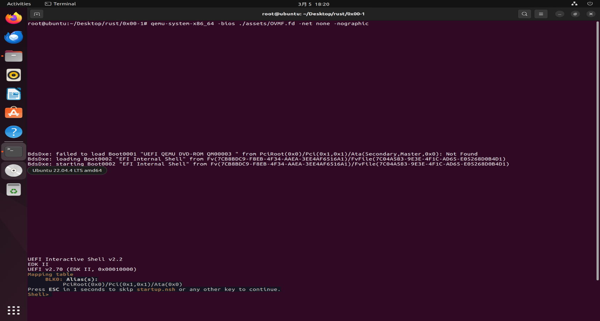
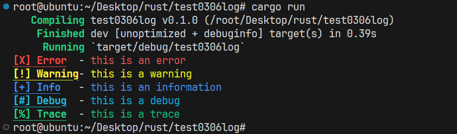

本文最后更新于 2024-05-14T10:10:00+00:00
YSOS-lab0
1. 实验要求
参照https://ysos.gzti.me/labs/0x00/tasks/
配置实验环境
尝试使用 Rust 进行编程
运行 UEFI Shell
YSOS启动！
思考题
加分项
2. 实验过程
搭建开发环境
安装linux虚拟机
使用VMware安装Ubuntu22.04虚拟机作为本学期实验的开发环境
搭建效果：
linux环境配置
执行下面的命令以安装必要的软件
1 2 3 sudo apt update && sudo apt upgrade'=https' --tlsv1.2 -sSf https://sh.rustup.rs | sh source "$HOME /.cargo/env"
值得注意的是，要安装2024-01-31nightly版本的rustc
1 rustup install nightly-2024-01-31
以下是对rustc版本进行管理的命令
查看安装好的版本列表
切换默认rust版本
删除指定rust版本
1 rustup toolchain uninstall 版本全名
查看当前rustc版本
实现VScode远程连接
VScode支持远程ssh连接到虚拟机，实现效果如下
尝试使用rust编程
task1
代码见关键代码部分，[点击跳转](# rust编程task1)
运行效果
task2
代码见关键代码部分，[点击跳转](# rust编程task2)
运行效果
task3
代码见关键代码部分，[点击跳转](# rust编程task3)
运行效果
task4
代码见关键代码部分，[点击跳转](# rust编程task4)
运行效果
task5
代码见关键代码部分，[点击跳转](# rust编程task5)
运行结果
运行UEFI SHell
在0x00文件夹下输入qemu-system-x86_64 -bios ./assets/OVMF.fd -net none -nographic，效果如下

启动YSOS
在0x00文件夹下执行python ysos.py run，可以看到YSOS成功启动，截图见实验结果，[点击跳转](# 4. 实验结果)
思考题
(1)了解现代操作系统（Windows）的启动过程，UEFI 和 Legacy（BIOS）的区别是什么？
了解现代操作系统（Windows）的启动过程，UEFI 和 Legacy（BIOS）的区别是什么？
BIOS:
BIOS是最早的引导方案，主板芯片组（如 AMD B450）会带有一块小型的 ROM，其中存放了初始化计算机的各种设备的代码。主板制造商通过连接 CPU 的地址线，使得芯片组上的程序的入口地址和 CPU 通电后的默认指令地址相同。这样，计算机在启动后就会执行这段代码，来检测内存、初始化主板芯片组、检测设备，而这段代码就被称为 BIOS。
上电后，CPU 执行BIOS 程序，BIOS 进行硬件自检，加载硬盘的第一个扇区到内存 0x7c00 处，这个扇区是 MBR （Master Boot Record），MBR 包含执行程序和分区表。CPU 执行 MBR 程序，查找第一个活动分区，加载活动分区的第一个扇区到内存中，这个扇区是 PBR （Partition Boot Record）。PBR 读取剩余的 15 扇区到内存中，然后执行 BOOTMGR 代码。
BIOS 采用基于中断的函数调用，存在效率低下、不同厂商程序和BIOS冲突的问题，所以后来建立了UEFI标准
UEFI:
现代操作系统（Windows）主要是采用UEFI启动的，启动过程如下（由Copilot给出）
SEC（安全验证）阶段 ：
在计算机上电后的第一阶段，SEC执行与硬件相关的验证。
控制权随后移交给PEI Foundation。
PEI（EFI前期初始化）阶段 ：
PEI阶段资源有限，后期会初始化内存。
初始化硬件设备，为DXE准备执行环境，并通过HOB传递给DXE Foundation。
DXE（驱动执行环境）阶段 ：
内存已完全可用。
提供大量功能，包括加载驱动程序、初始化设备等。
BDS（启动设备选择）阶段 ：
TSL（操作系统加载前期）阶段 ：
RT（系统运行阶段）阶段 ：
AL（系统灾难恢复期或关机）阶段 ：
(2)尝试解释 Makefile 中的命令做了哪些事情？或许你可以参考下列命令来得到更易读的解释：
尝试解释 Makefile 中的命令做了哪些事情？
Makefile的功能和ysos.py的功能是等价的，可以参考ysos.py中的内容
当执行make build时，会在pkg/boot目录下执行cargo build --release，得到的二进制文件位于target/x86_64-unknown-uefi/release/ysos_boot.efi。随后，这个文件会被复制到esp/EFI/BOOT/BOOTX64.EFI。
当执行make launch时，会执行qemu-system-x86_64 -bios assets/OVMF.fd -net none -nographic -m 96M -drive format=raw,file=fat:rw:esp，这样YSOS就成功启动了
值得注意的是，make launch必须在make build之后才能执行
当执行make run时，实际上是先执行make build，再执行make launch
当执行make clean时，会删除esp文件夹，然后执行cargo clean
(3)利用 cargo 的包管理和 docs.rs 的文档，我们可以很方便的使用第三方库。这些库的源代码在哪里？它们是什么时候被编译的？
利用 cargo 的包管理和 docs.rs 的文档，我们可以很方便的使用第三方库。这些库的源代码在哪里？它们是什么时候被编译的？
第三方库的源代码通常位于代码托管平台（如 GitHub 等）上，执行cargo build的时候，cargo会自动下载并编译这些第三方库。第三方库一般是在本地项目编译之前完成编译的
值得注意的是，有时候库会提前被拉取并编译，在使用VScode时，当我们在Cargo.toml加入xxx="xxx"时，rust就会自动拉取指定的库并编译。
(4)为什么我们需要使用 #[entry] 而不是直接使用 main 函数作为程序的入口？
为什么我们需要使用 #[entry] 而不是直接使用 main 函数作为程序的入口？
因为UEFI 规范明确规定了程序的入口点必须是一个特定的函数签名，而不是标准的 main 函数。因此，我们需要使用 #[entry] 属性来标记这个特定的函数作为程序的入口。
如果直接使用标准的 main 函数，UEFI 固件将无法正确调用它，因为它不符合 UEFI 规范对程序入口的要求。
加分项
1-带颜色效果的日志
实现代码见关键代码部分，[点击跳转](# 加分项1-带颜色效果的日志)

为五种不同的log类型实现了不同的颜色，并且对log类型加粗和下划线
2-mycd
实现代码见关键代码部分，[点击跳转](# 加分项2-mycd)
1 2 3 4 export PATH=$PATH :/root/Desktop/rust/mycd/target/debug/
然后输入mycd 路径，此处输入的路径支持绝对路径和相对路径，可以看到控制台返回的目标绝对路径（但不会真的跳转，也不会判断路径是否存在）
以下是一些测试
可以看出，mycd能够处理各种复杂的路径
2-myls
实现代码见关键代码部分，[点击跳转](# 加分项2-myls)
1 2 3 4 export PATH=$PATH :/root/Desktop/rust/myls/target/debug/
以下是一些测试
可以看出，myls能够
处理复杂的路径
列出文件的最近修改时间（东八区）
列出文件的大小（并且格式化为B,KiB,MiB,GiB的结尾）
列出文件名，并且将文件夹的名字打印为蓝色
2-mycat
实现代码见关键代码部分，[点击跳转](# 加分项2-mycat)
1 2 3 4 export PATH=$PATH :/root/Desktop/rust/mycat/target/debug/
以下是一些测试
可以看出，mycat能够
3-多线程的安全性
实现代码见关键代码部分，[点击跳转](# 加分项3-多线程的安全性)
main.rs的思路大致如下
UniqueId::new()函数使用AtomicU16实现，需要验证它具备多线程下的安全性UniqueId::new1()函数使用static mut变量实现，需要验证它不具备多线程下的安全性
main函数分为两部分：
前一部分并发运行两个进程，执行循环调用UniqueId::new()函数30000次，并打印id
后一部分并发运行两个进程，执行循环调用UniqueId::new1()函数30000次，并打印id
运行cargo run > run.txt，输出的结果写到run.txt
find.py的功能是读取run.txt，从中查找两个部分id重复出现情况
当同一id重复出现，就说明当前调用的函数不具备多线程的安全性
运行python ./find.py，以下是某一次运行的结果
可以看出，num()没有出现同一id重复出现的情况，而num1()出现了13次
打开run.txt，查看其中某一处同一id重复出现的情况，例如在61435行
1432被两个进程同时打印了
由此证明
static mut 变量在多线程下不安全（可能获得相同的 UniqueId）AtomicU16 来实现 UniqueId ，在多线程下是安全的（不可能获得相同的 UniqueId）
对unsafe的看法
在实现new1()函数时，发现下面的代码如果不放在unsafe块中，会出现报错
1 2 id = COUNTER;1 ;
报错内容如下
1 2 3 this operation is unsafe and requires an unsafe function or blockrust-analyzerE0133 and requires unsafe function or block be mutated by multiple threads: aliasing violations or data races will cause undefined behavior
大致意思是，使用可变的静态变量是不安全的，它可能会被多个线程同时改变，造成未定义的行为
有时候编译器的检查过于严格，导致一些操作无法实现，unsafe块可以让编译器放松编译检查，标识代码中的unsafe的不安全部分，也表明这一部分的安全性要由开发者负责。
当debug时，开发者可以快速发现unsafe块的存在，思考其中的行为是否导致了bug。unsafe块其实是提高了debug的效率
3. 关键代码
rust编程task1
1 2 3 4 5 6 7 8 9 10 11 12 13 14 15 16 17 18 19 20 21 22 23 24 25 26 27 28 29 30 31 32 33 34 35 36 37 38 39 40 41 42 43 44 45 46 use std::fs::File;use std::io::Read;use std::time::Duration;use std::{io, thread};fn main () {count_down (5 );let s = read_and_print ("/etc/hosts" ).expect ("Failed to read file" );println! ("{}" , s);let mut file_path = String ::new ();stdin ()read_line (&mut file_path)expect ("Please enter the path" );let file_path =file_path.trim ();let size = match file_size (file_path) {Ok (size) => size,Err (e) => panic! ("{}" , e),println! ("the size of {} is {}" , file_path, size);fn count_down (seconds: u64 ) {let mut now = seconds;while now != 0 {println! ("{}" , now);sleep (Duration::from_secs (1 ));1 ;println! ("Countdown finished!" );fn read_and_print (file_path: &str ) -> Result <String , io::Error> {let mut f = File::open (file_path)?;let mut ret = String ::new ();read_to_string (&mut ret)?;Ok (ret)fn file_size (file_path: &str ) -> Result <u64 , &str > {match File::open (file_path) {Ok (f) => match f.metadata () {Ok (s) => Ok (s.len ()),Err (_) => Err ("Failed to get file size" ),Err (_) => Err ("File not found" ),
rust编程task2
1 2 3 4 5 6 7 8 9 10 11 12 13 14 15 16 17 18 19 20 21 22 23 24 25 26 27 28 29 30 31 32 fn main () {let byte_size = 1554056 ;let (size, unit) = humanized_size (byte_size);println! ("Size : {:.4} {unit}" , size);fn humanized_size (size: u64 ) -> (f64 , &'static str ) {let mut f : f64 = size as f64 ;if size < 1024 {"B" )else if size < 1024 * 1024 {1024.0 ;"KiB" )else if size < 1024 * 1024 * 1024 {1024.0 * 1024.0 ;"MiB" )else {1024.0 * 1024.0 * 1024.0 ;"GiB" )#[cfg(test)] mod tests {use super::*;#[test] fn test_humanized_size () {let byte_size = 1554056 ;let (size, unit) = humanized_size (byte_size);assert_eq! ("Size : 1.4821 MiB" , format! ("Size : {:.4} {unit}" , size));
rust编程task3
1 2 3 4 5 6 7 8 9 10 11 extern crate termion;fn main () {let (x, y) = termion::terminal_size ().unwrap ();let x = x as usize ;println! ("\x1b[32mINFO:\x1b[0m\x1b[37m Hello, world!\x1b[0m" );println! ("\x1b[1;4;33mWARNING:\x1b[0m\x1b[1;33m I'm a teapot!\x1b[0m" );println! ("{1:^0$}" , x, "\x1b[1;31mERROR: KERNEL PANIC!!!\x1b[0m" );
rust编程task4
1 2 3 4 5 6 7 8 9 10 11 12 13 14 15 16 17 18 19 20 21 22 23 24 25 26 27 28 29 30 31 32 fn main () {let rectangle = Shape::Rectangle {10.0 ,20.0 ,let circle = Shape::Circle { radius: 10.0 };println! ("rectangle.area()={}" , rectangle.area ());println! ("circle.area()={}" , circle.area ());enum Shape {f64 , height: f64 },f64 },impl Shape {pub fn area (&self ) -> f64 {match self {f64 ::consts::PI,#[test] fn test_area () {let rectangle = Shape::Rectangle {10.0 ,20.0 ,let circle = Shape::Circle { radius: 10.0 };assert_eq! (rectangle.area (), 200.0 );assert_eq! (circle.area (), 314.1592653589793 );
rust编程task5
1 2 3 4 5 6 7 8 9 10 11 12 13 14 15 16 17 18 19 20 21 22 23 24 25 26 27 28 fn main () {let id1 = UniqueId::new ();let id2 = UniqueId::new ();println! ("{},{}" ,id1,id2);assert_ne! (id1, id2);use std::sync::atomic::{AtomicU16, Ordering};pub struct UniqueId (u16 );impl UniqueId {pub fn new () -> u16 {static COUNTER: AtomicU16 = AtomicU16::new (0 );let id = COUNTER.fetch_add (1 , Ordering::SeqCst);#[test] fn test_unique_id () {let id1 = UniqueId::new ();let id2 = UniqueId::new ();println! ("{},{}" ,id1,id2);assert_ne! (id1, id2);
加分项1-带颜色效果的日志
1 2 3 4 5 6 7 8 9 10 11 12 13 14 15 16 17 18 19 20 21 22 23 24 25 26 27 28 29 30 31 32 33 34 35 36 37 38 39 40 use log::{Record, Level, Metadata, LevelFilter, SetLoggerError,error,warn,info,debug,trace};static CONSOLE_LOGGER: ConsoleLogger = ConsoleLogger;struct ConsoleLogger ;impl log ::Log for ConsoleLogger {fn enabled (&self , metadata: &Metadata) -> bool {level () <= Level::Tracefn log (&self , record: &Record) {if self .enabled (record.metadata ()) {match record.level () {println! ("\x1b[31;1;4m[X] Error\x1b[0m - \x1b[31m{}\x1b[0m" , record.args ()),println! ("\x1b[33;1;4m[!] Warning\x1b[0m- \x1b[33m{}\x1b[0m" , record.args ()),println! ("\x1b[34;1;4m[+] Info\x1b[0m - \x1b[34m{}\x1b[0m" , record.args ()),Debug => println! ("\x1b[36;1;4m[#] Debug\x1b[0m - \x1b[36m{}\x1b[0m" , record.args ()),println! ("\x1b[32;1;4m[%] Trace\x1b[0m - \x1b[32m{}\x1b[0m" , record.args ()),fn flush (&self ) {}fn main () -> Result <(), SetLoggerError> {set_logger (&CONSOLE_LOGGER)?;set_max_level (LevelFilter::Trace);"main" , "this is an error" );"main" , "this is a warning" );"this is an information" );"this is a debug" );"this is a trace" );Ok (())
加分项2-mycd
1 2 3 4 5 6 7 8 9 10 11 12 13 14 15 16 17 18 19 20 21 22 23 24 25 26 27 28 29 30 31 32 33 34 35 36 37 38 39 40 41 42 43 44 45 46 47 48 49 50 51 52 53 54 55 56 57 58 59 60 61 62 63 64 65 66 67 68 69 70 71 72 73 74 75 76 77 78 79 80 81 82 83 84 85 use std::env;use std::process::Command;fn main () {let goto :String ;let args : Vec <String > = env::args ().collect ();if args.len ()<2 {String ::from ("~" );else {let dist = &args[1 ];get_path (dist);println! ("go to {}" , goto);fn get_path (dist: &String ) -> String {let tar = split_path (dist);if dist.chars ().next ().unwrap () != '/' {let cur = String ::from (env::current_dir ().unwrap ().to_str ().unwrap ());let mut vcur = split_path (&cur);extend (tar);join_path (&vcur)else {let tar = formatting_path(&tar);join_path (&tar)fn split_path (path: &String ) -> Vec <String > {let mut tmps : String = String ::from ("" );let mut ret : Vec <String > = Vec ::new ();for ch in path.chars () {if ch == '/' {if tmps.len () != 0 {let add = tmps.clone ();push (add);clear ();else {push (ch);if tmps.len () != 0 {let add = tmps.clone ();push (add);fn formatting_path (path: &Vec <String >) -> Vec <String > {let mut ret : Vec <String > = Vec ::new ();for p in path {if p == ".." {if ret.len () != 0 {pop ();else if p != "." {let add = p.clone ();push (add);fn join_path (path: &Vec <String >) -> String {let mut ret = String ::from ("" );for s in path {"/" ;match ret.len () {0 => String ::from ("/" ),
加分项2-myls
1 2 3 4 5 6 7 8 9 10 11 12 13 14 15 16 17 18 19 20 21 22 23 24 25 26 27 28 29 30 31 32 33 34 35 36 37 38 39 40 41 42 43 44 45 46 47 48 49 50 51 52 53 54 55 56 57 58 59 60 61 62 63 64 65 66 67 68 69 70 71 72 73 74 75 76 77 78 79 80 81 82 83 84 85 86 87 88 89 90 91 92 93 94 95 96 97 98 99 100 101 102 103 104 105 106 107 108 109 110 111 112 113 114 115 116 117 118 119 120 121 122 123 124 125 126 127 128 129 130 131 132 133 134 135 136 137 138 139 140 141 142 143 144 145 146 147 148 149 150 151 152 153 154 155 156 use chrono::{DateTime, FixedOffset, Utc};use std::{self , File},fn main () -> Result <(), Box <dyn std::error::Error>> {let goto : String ;let args : Vec <String > = env::args ().collect ();if args.len () < 2 {String ::from (env::current_dir ().unwrap ().to_str ().unwrap ());else {let dist = &args[1 ];get_path (dist);for entry in fs::read_dir (&goto)? {let entry = entry?;let path = entry.path ();let metadata = fs::metadata (&path)?;let modified_time = metadata.modified ()?;let utc : DateTime<Utc> = modified_time.into ();let shanghai_offset = FixedOffset::east (8 * 3600 );let shanghai_time : DateTime<FixedOffset> = utc.with_timezone (&shanghai_offset);let formatted_time = shanghai_time.format("%Y-%m-%d %H:%M:%S" ).to_string ();if metadata.is_file () {let file_name = String ::from (path.file_name ().ok_or ("No filename" )?.to_str ().unwrap ());let file_path = goto.clone () + "/" + &file_name;print! ("{}\t" , formatted_time);if let Ok (k) = file_size (&file_path) {let (size, unit) = humanized_size (k);print! ("{:.1}{} \t" , size, unit);print! ("{}\t" , file_name);print! ("\n" );else {let file_name = String ::from (path.file_name ().ok_or ("No filename" )?.to_str ().unwrap ());let file_path = goto.clone () + "/" + &file_name;print! ("{}\t" , formatted_time);if let Ok (k) = file_size (&file_path) {let (size, unit) = humanized_size (k);print! ("{:.1}{} \t" , size, unit);print! ("\x1b[34m{}\x1b[0m\t" , file_name);print! ("\n" );Ok (())fn get_path (dist: &String ) -> String {let tar = split_path (dist);if dist.chars ().next ().unwrap () != '/' {let cur = String ::from (env::current_dir ().unwrap ().to_str ().unwrap ());let mut vcur = split_path (&cur);extend (tar);join_path (&vcur)else {let tar = formatting_path(&tar);join_path (&tar)fn split_path (path: &String ) -> Vec <String > {let mut tmps : String = String ::from ("" );let mut ret : Vec <String > = Vec ::new ();for ch in path.chars () {if ch == '/' {if tmps.len () != 0 {let add = tmps.clone ();push (add);clear ();else {push (ch);if tmps.len () != 0 {let add = tmps.clone ();push (add);fn formatting_path (path: &Vec <String >) -> Vec <String > {let mut ret : Vec <String > = Vec ::new ();for p in path {if p == ".." {if ret.len () != 0 {pop ();else if p != "." {let add = p.clone ();push (add);fn join_path (path: &Vec <String >) -> String {let mut ret = String ::from ("" );for s in path {"/" ;match ret.len () {0 => String ::from ("/" ),fn file_size (file_path: &str ) -> Result <u64 , &str > {match File::open (file_path) {Ok (f) => match f.metadata () {Ok (s) => Ok (s.len ()),Err (_) => Err ("Failed to get file size" ),Err (_) => Err ("File not found" ),fn humanized_size (size: u64 ) -> (f64 , &'static str ) {let mut f : f64 = size as f64 ;if size < 1024 {"B" )else if size < 1024 * 1024 {1024.0 ;"KiB" )else if size < 1024 * 1024 * 1024 {1024.0 * 1024.0 ;"MiB" )else {1024.0 * 1024.0 * 1024.0 ;"GiB" )
加分项2-mycat
1 2 3 4 5 6 7 8 9 10 11 12 13 14 15 16 17 18 19 20 21 22 23 24 25 26 27 28 29 30 31 32 33 34 35 36 37 38 39 40 41 42 43 44 45 46 47 48 49 50 51 52 53 54 55 56 57 58 59 60 61 62 63 64 65 66 67 68 69 70 71 72 73 74 75 76 77 78 79 80 81 82 83 84 85 86 87 88 89 90 91 92 use std::env;use std::fs::File;use std::io::{BufReader, BufRead};fn main () {let goto :String ;let args : Vec <String > = env::args ().collect ();if args.len ()<2 {println! ("\x1b[31mError:\x1b[0m Please input file path" );return ;else {let dist = &args[1 ];get_path (dist);let input = File::open (goto).unwrap ();let buffered = BufReader::new (input);for line in buffered.lines () {println! ("{}" , line.unwrap ());fn get_path (dist: &String ) -> String {let tar = split_path (dist);if dist.chars ().next ().unwrap () != '/' {let cur = String ::from (env::current_dir ().unwrap ().to_str ().unwrap ());let mut vcur = split_path (&cur);extend (tar);join_path (&vcur)else {let tar = formatting_path(&tar);join_path (&tar)fn split_path (path: &String ) -> Vec <String > {let mut tmps : String = String ::from ("" );let mut ret : Vec <String > = Vec ::new ();for ch in path.chars () {if ch == '/' {if tmps.len () != 0 {let add = tmps.clone ();push (add);clear ();else {push (ch);if tmps.len () != 0 {let add = tmps.clone ();push (add);fn formatting_path (path: &Vec <String >) -> Vec <String > {let mut ret : Vec <String > = Vec ::new ();for p in path {if p == ".." {if ret.len () != 0 {pop ();else if p != "." {let add = p.clone ();push (add);fn join_path (path: &Vec <String >) -> String {let mut ret = String ::from ("" );for s in path {"/" ;match ret.len () {0 => String ::from ("/" ),
加分项3-多线程的安全性
main.rs
1 2 3 4 5 6 7 8 9 10 11 12 13 14 15 16 17 18 19 20 21 22 23 24 25 26 27 28 29 30 31 32 33 34 35 36 37 38 39 40 41 42 43 44 45 46 47 48 49 50 51 52 53 54 55 56 57 58 59 60 61 62 use std::thread;use std::time::Duration;fn main () {static cnt:u16 = 30000 ;println! ("using new()" );let handle = thread::spawn (|| {for i in 1 ..cnt {let id = UniqueId::new ();println! ("id={}, from the spawned thread" , id);sleep (Duration::from_nanos (1 ));for i in 1 ..cnt {let id = UniqueId::new ();println! ("id={}, from the main thread" , id);sleep (Duration::from_nanos (1 ));join ().unwrap ();println! ("--------------------" );println! ("using new1()" );let handle = thread::spawn (|| {for i in 1 ..cnt {let id = UniqueId::new1 ();println! ("id={}, from the spawned thread" , id);sleep (Duration::from_nanos (1 ));for i in 1 ..cnt {let id = UniqueId::new1 ();println! ("id={}, from the main thread" , id);sleep (Duration::from_nanos (1 ));join ().unwrap ();use std::sync::atomic::{AtomicU16, Ordering};pub struct UniqueId (u16 );impl UniqueId {pub fn new () -> u16 {static COUNTER: AtomicU16 = AtomicU16::new (0 );let id = COUNTER.fetch_add (1 , Ordering::SeqCst);pub fn new1 () -> u16 {static mut COUNTER: u16 = 0 ;let id ;unsafe {1 ;
find.py
1 2 3 4 5 6 7 8 9 10 11 12 13 14 15 16 17 18 19 20 21 22 23 24 25 26 27 28 29 30 31 32 with open ("./run.txt" ,"r" ) as file:for s in content:if s[0 ]!="i" :1 )continue "=" )"," )1 :end]int (s))dict ()0 for i,n in enumerate (num):if n == -1 :continue if n==0 :1 if n in umap:print (f"in line {i+1 } , {n} was printed again" ,end="" )if tag == 0 :print (" by num()" )else :print (" by num1()" )else :1
4. 实验结果
YSOS成功启动后的画面
可以看出YSOS一直在打印Hello World from UEFI bootloader! @ 22330004
5. 总结
在本次实验中熟悉了rust的使用，了解了现代操作系统是如何借助UEFI启动的，成功启动了YSOS